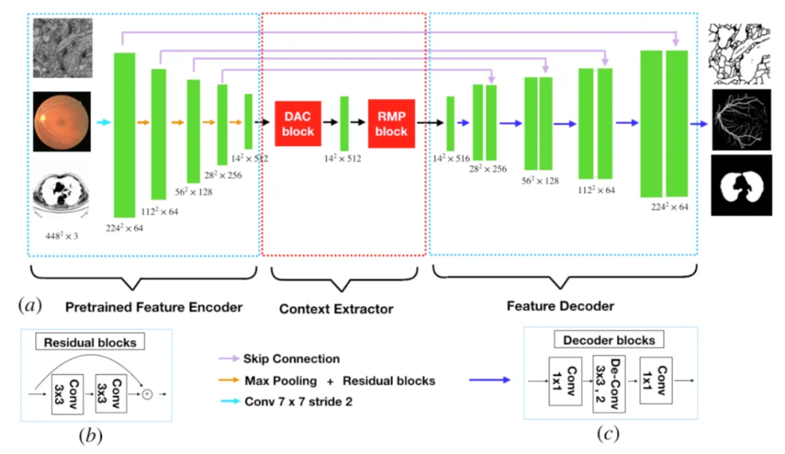
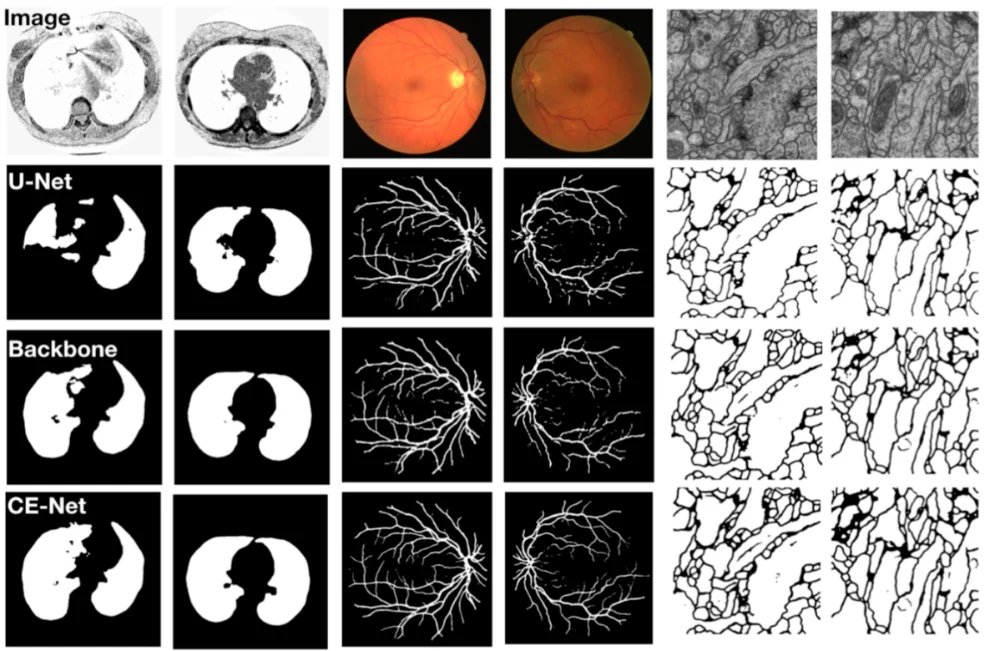
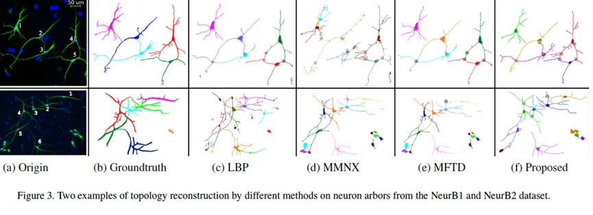
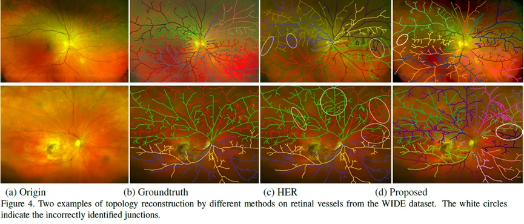
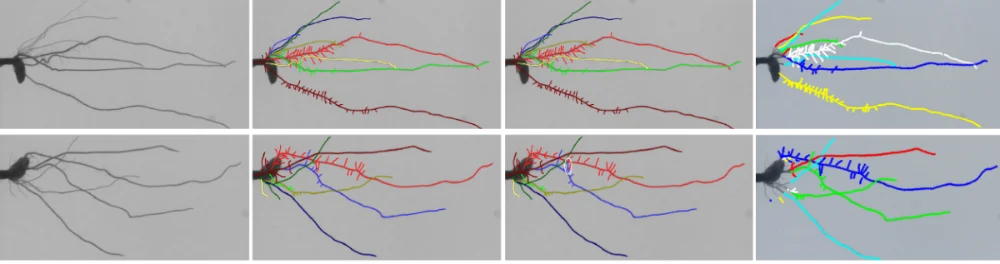

近日，医学影像事业部（iMED中国团队）的硕士研究生和高级助理分别在在医学影像处理和人工智能领域以第一作者发表两篇高水平论文。
- 新型的二维医学图像分割算法
上海大学与宁波材料所联合培养研究生顾在旺在《IEEE Transcation on Medical Imaging, TMI》 杂志上发表最新研究成果 CE-Net：Context Encoder Network for 2D Medical Image Segmentation，文章提出了一种新型的二维医学图像分割算法。注：IEEE Transactions on Medical Imaging（IF=6.131）由电气电子工程师学会（IEEE）出版，每年接收文章200篇左右，是国际医学影像研究领域的权威TOP期刊，也是中科院SCI分区表的计算机跨学科应用1区期刊。
医学图像分割是医学影像分析中一个重要的步骤。随着基于神经网络的图像处理算法快速发展，基于U-Net的深度学习分割框架已经被广泛地应用于医学图像分割任务中，例如视盘视杯分割、血管检测，以及细胞分割等等。然而，在U-Net网络中，连续的池化操作以及带有步幅卷积运算会导致图像中部分细节信息的丢失。
针对这个需求，该文章提出了一种上下文编码网络(context encoder network，简称CE-Net)，用于在医学图像分割中获取高阶的语义特征并保留更多细节信息。CE-Net主要包括三个主要组件:特征编码器模块（Encoder）、上下文提取器（context Extractor）和特征解码器模块（Decoder）。

最终的实验结果表明，该方法在视盘分割、血管检测、肺分割、细胞轮廓分割、视网膜光学相干断层扫描分割等方面，分割性能均优于原始的U-Net并取得了目前最优的（state-of-the-art）的结果。


- 树状结构的拓扑重建方法
高级助理谢建洋的论文Topology Reconstruction for Tree-like Structure via Dominant Set and Structural Similarity Measure被国际计算机视觉与模式识别会议录用《Internaltional Conference on Computer Vision and Pattern Recogintion，CVPR 2019》）。注：CVPR作为计算机视觉和人工智能领域的国际顶级会议，接收率20%左右。根据Google Scholar Metrics 2018年最新版学术指标，CVPR的h5指数188，h5中位数302，位列榜单第20名，也是人工智能领域的第一名。
拓扑结构对于医学图像的分析与理解有着至关重要的作用。如医生可通过组织内血管的拓扑信息进行外科手术规划，生物学家可通过筛选神经元之间的连接性以研究神经元结构和功能之间的关系。因此，准确的重建生物医学图像中常见的树状结构的拓扑信息可为医生提供非常有价值的临床诊断信息。而在进行拓扑重建时，识别和区分单个血管束的完整树状结构是至关重要的。潜在的树形结构揭示了不同的曲线段在解剖学上的连通性，当两个或者更多的曲线分量交叉或者分叉时，现有的拓扑重建方法很难准确的识别潜在的连接关系。
因此本文中提出了一种有效的拓扑重建方法，其中包括两个主要贡献。第一，提出了一种基于SSIM的相似度度量方法，该方法分别考虑了图像对比度以及曲线的几何特性，并分别在局部以及全局范围中来表示曲线结构的特征。第二，将拓扑结构的重建问题转化为数学上的聚类问题，首次采用Dominant set实现曲线结构相似性的聚类，并通过实验证明该方法的有效性。



[原始资料中的此图片暂不可用]